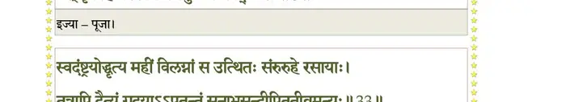
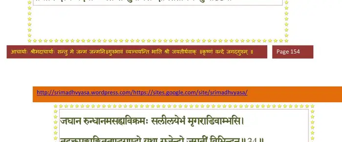
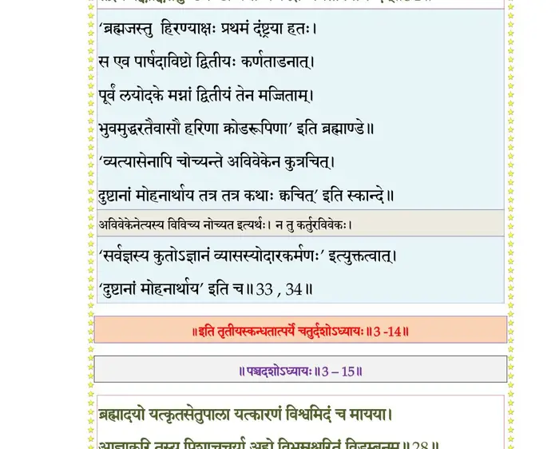

स्कन्ध 3 · अध्याय 14
श्लोक १
शुक उवाच–
निशम्य वाचं वदतो मुनेः पुण्यतमां नृप ।
भूयः पप््राच्छ कौरव्यो वासुदेवकथादृतः।। १ ।।
निशम्य वाचं वदतो मुनेः पुण्यतमां नृप ।
भूयः पप््राच्छ कौरव्यो वासुदेवकथादृतः।। १ ।।
श्लोक २
विदुर उवाच–
स वै स्वायम्भुवः सम्राट् प््रिायः पुत्रः खयम्भुवः ।
प््रातिलभ्य प््रिायां पत्नीं किं चकार ततो मुने।। २ ।।
स वै स्वायम्भुवः सम्राट् प््रिायः पुत्रः खयम्भुवः ।
प््रातिलभ्य प््रिायां पत्नीं किं चकार ततो मुने।। २ ।।
श्लोक ३
चरितं तस्य राजर्षेरादिराजस्य सत्तम ।
ब्रूहि मे श्रद्दधानाय विष्वक्सेनाश्रयो ह्यसौ।। ३ ।।
ब्रूहि मे श्रद्दधानाय विष्वक्सेनाश्रयो ह्यसौ।। ३ ।।
श्लोक ४
श्रुतस्य पुंसः सुचिरश्रमस्य नन्वञ्जसा सूरिभिरीडितोऽर्थः ।
यत् तद् गुणानुश्रवणं मुकुन्दपादारविन्दं हृदयेषु येषाम्।। ४ ।।
यत् तद् गुणानुश्रवणं मुकुन्दपादारविन्दं हृदयेषु येषाम्।। ४ ।।
श्लोक ५
शुक उवाच–
इति ब्रुवाणं विदुरं विनीतं सहस्रशीर्ष्णश्चरणोपधानम् ।
प््राहृष्टरोमा भगवत्कथायां प््राणीयमानो मुनिरभ्यचष्ट।। ५ ।।
इति ब्रुवाणं विदुरं विनीतं सहस्रशीर्ष्णश्चरणोपधानम् ।
प््राहृष्टरोमा भगवत्कथायां प््राणीयमानो मुनिरभ्यचष्ट।। ५ ।।
श्लोक ६
मैत्रेय उवाच–
यदा स्वभार्यया साकं जातः स्वायम्भुवो मनुः ।
प््र•ञ्चलिः प््राणतश्चेदं वेदगर्भमभाषत।। ६ ।।
यदा स्वभार्यया साकं जातः स्वायम्भुवो मनुः ।
प््र•ञ्चलिः प््राणतश्चेदं वेदगर्भमभाषत।। ६ ।।
श्लोक ७
त्वमेकः सर्वभूतानां जन्मकृद् वृत्तिदः पिता ।
अथापि नः प््राजानां ते शुश्रूषा केन वा भवेत्।। ७ ।।
अथापि नः प््राजानां ते शुश्रूषा केन वा भवेत्।। ७ ।।
श्लोक ८
तद् विधेहि नमस्तुभ्यं कर्मस्विज्यात्मशक्तिषु ।
यत् कृत्वेह यशो विष्वगमुत्र च भवेद् गतिः।। ८ ।।
यत् कृत्वेह यशो विष्वगमुत्र च भवेद् गतिः।। ८ ।।
भागवततात्पर्यनिर्णय

श्लोक ९
ब्रह्मोवाच–
प््राीतस्तुभ्यमहं तात स्वस्ति स्याद् वां क्षितीश्वर ।
यन्निर्व्यलीकेन हृदा शाधि मेत्यात्मनाऽर्पितम्।। ९ ।।
प््राीतस्तुभ्यमहं तात स्वस्ति स्याद् वां क्षितीश्वर ।
यन्निर्व्यलीकेन हृदा शाधि मेत्यात्मनाऽर्पितम्।। ९ ।।
श्लोक १०
एतावत्यात्मजैरेवं कार्याऽथापचितिर्गुरौ ।
शक्त्याऽप््रामत्तैर्गृह्येत शासनं गतमत्सरैः।। १० ।।
शक्त्याऽप््रामत्तैर्गृह्येत शासनं गतमत्सरैः।। १० ।।
श्लोक ११
स त्वमस्यामपत्यानि सदृशान्यात्मनो गुणैः ।
उत्पाद्य शाधि धर्मेण गां यज्ञैः पुरुषं यज।। ११ ।।
उत्पाद्य शाधि धर्मेण गां यज्ञैः पुरुषं यज।। ११ ।।
श्लोक १२
परं शुश्रूषणं मह्यं स्यात् प््राजारक्षया नृप ।
भगवांस्ते प््राजाभर्तुर्हृषीकेशोऽनुतुष्यति।। १२ ।।
भगवांस्ते प््राजाभर्तुर्हृषीकेशोऽनुतुष्यति।। १२ ।।
श्लोक १३
येषां न तुष्टो भगवान् यज्ञलिङ्गो जनार्दनः ।
तेषां श्रमोऽप्यह्यपार्थाय यदात्मा नादृतः स्वयम्।। १३ ।।
तेषां श्रमोऽप्यह्यपार्थाय यदात्मा नादृतः स्वयम्।। १३ ।।
श्लोक १४
मनुरुवाच–
आदेशेऽहं भगवतो वर्तयाम्यरिसूदन ।
स्थानं त्विहानुजानीहि प््राजानां मम च प््राभो।। १४ ।।
आदेशेऽहं भगवतो वर्तयाम्यरिसूदन ।
स्थानं त्विहानुजानीहि प््राजानां मम च प््राभो।। १४ ।।
श्लोक १५
यदोकः सर्वसत्त्वानां मही मग्ना महाम्भसि ।
अस्या उद्धरणे यत्नो देव देव्या विधीयताम्।। १५ ।।
अस्या उद्धरणे यत्नो देव देव्या विधीयताम्।। १५ ।।
श्लोक १६
मैत्रेय उवाच–
परमेष्ठी त्वपां मध्ये तथा सन्नामवेक्ष्य गाम् ।
कथमेनां समुन्नेष्य इति दध्यौ धिया चिरम्।। १६ ।।
परमेष्ठी त्वपां मध्ये तथा सन्नामवेक्ष्य गाम् ।
कथमेनां समुन्नेष्य इति दध्यौ धिया चिरम्।। १६ ।।
श्लोक १७
पीतं मया जलं सर्वं पृथिवी च निवेशिता ।
तथाऽपि किमिदं साद्य प्लाव्यते पुनरम्बुभिः।। १७ ।।१
तथाऽपि किमिदं साद्य प्लाव्यते पुनरम्बुभिः।। १७ ।।१
श्लोक १८
प््राजा देवासुरपितृमनुष्यपशुपक्षिणः ।
सरीसृपान् नगान् नागान् भूतान्युच्चावचानि च।। १८ ।।
सरीसृपान् नगान् नागान् भूतान्युच्चावचानि च।। १८ ।।
श्लोक १९
सृजतो मे क्षितिर्वार्भिं प्लाव्यमाना लयं गता ।
अथात्र किमनुष्ठेयमस्माभिः सर्गयोजितैः।। १९ ।।
अथात्र किमनुष्ठेयमस्माभिः सर्गयोजितैः।। १९ ।।
श्लोक २०
यस्याहं हृदयादासं स ईशो विदधातु मे ।
इत्यभिध्यायतो नासाविवरात् सहसाऽनघ ।
वराहतोको निरगादङ्गुष्ठपरिमाणतः।। २० ।।
इत्यभिध्यायतो नासाविवरात् सहसाऽनघ ।
वराहतोको निरगादङ्गुष्ठपरिमाणतः।। २० ।।
श्लोक २१
तस्याभिपश्यतः स्वस्थः क्षणेन किल भारत ।
गजमात्रः प््राववृधे तदद्भुतमभून्महत्।। २१ ।।
गजमात्रः प््राववृधे तदद्भुतमभून्महत्।। २१ ।।
श्लोक २२
मरीचिमुख्यैर्विप््रौश्च कुमारैर्मनुना सह ।
दृष्ट्वा तत् सौकरं रूपं तर्कयामास चित्रधा।। २२ ।।
दृष्ट्वा तत् सौकरं रूपं तर्कयामास चित्रधा।। २२ ।।
श्लोक २३
किमेतत् सौकरव्याजं सत्त्वं दिव्यमवस्थितम् ।
अहो बताश्चर्यमिदं नासाया मे विनिःसृतम्।। २३ ।।
अहो बताश्चर्यमिदं नासाया मे विनिःसृतम्।। २३ ।।
श्लोक २४
दृष्टोऽङ्गुष्ठशिरोमात्रः क्षणाद् गण्ड(शिलासमः)शिलोपमः ।
अपिस्विद् भगवानेष यज्ञो मे खेदयन्मनः।। २४ ।।
अपिस्विद् भगवानेष यज्ञो मे खेदयन्मनः।। २४ ।।
श्लोक २५
इति मीमांसतस्तस्य ब्रह्मणः सह सूनुभिः ।
भगवान् यज्ञपुरुषो जगर्जाऽगेन्द्रसन्निभः।। २५ ।।
भगवान् यज्ञपुरुषो जगर्जाऽगेन्द्रसन्निभः।। २५ ।।
श्लोक २६
ब्रह्माणं हर्षयामास हरिस्तांश्च द्विजोत्तमान् ।।
स्वगर्जितेन ककुभः प््रातिस्वनयता विदुः।। २६ ।।
स्वगर्जितेन ककुभः प््रातिस्वनयता विदुः।। २६ ।।
श्लोक २७
निशम्य तद् घर्घरितं स्वखेदक्षयिष्णु मायामयसूकरस्य ।
जनस्तपः सत्यनिवासिनस्ते त्रिभिः पवित्रैर्मुनयोऽगृणन् स्म।।२७।।
जनस्तपः सत्यनिवासिनस्ते त्रिभिः पवित्रैर्मुनयोऽगृणन् स्म।।२७।।
श्लोक २८
तेषां सतां वेदवितानमूर्तिं ब्रह्मावधार्यात्मगुणानुवादम् ।
ननर्द भूयो विबुधोदयाय गजेन्द्रलीलो जलमाविवेश।। २८ ।।
ननर्द भूयो विबुधोदयाय गजेन्द्रलीलो जलमाविवेश।। २८ ।।
श्लोक २९
उत्क्षिप्तबालः खचरः कठोरसटा विधुन्वन् खररोमशत्वक् ।
खुराहताभ्रः सितशृङ्ग ईक्षाज्योतिर्विभासो भगवान् महीध्रः।। २९ ।।
खुराहताभ्रः सितशृङ्ग ईक्षाज्योतिर्विभासो भगवान् महीध्रः।। २९ ।।
श्लोक ३०
घ्राणेन पृथ्व्याः पदवीं विजिघ्रन् क्रोडापदेशः स्वयमध्वराङ्गः ।
करालदंष्ट्रोऽप्यकरालदृग्भ्यामुद्वीक्ष्य विप््र•न् गृणतोऽविशत् कम्।।३०।।
करालदंष्ट्रोऽप्यकरालदृग्भ्यामुद्वीक्ष्य विप््र•न् गृणतोऽविशत् कम्।।३०।।
श्लोक ३१
स वज्रकूटाङ्गनिपातवेगविशीर्णकुक्षिः स्तनयन्नुदन्वान् ।
उत्सृष्टदीर्घोर्मिकरैरिवार्तश्चुक्रोश यज्ञेश्वर पाहि मेति।। ३१ ।।
उत्सृष्टदीर्घोर्मिकरैरिवार्तश्चुक्रोश यज्ञेश्वर पाहि मेति।। ३१ ।।
श्लोक ३२
खुरैः क्षुरप््रौर्दरयंस्तदाप उत्पारवारं त्रिवरू रसायाम् ।
ददर्श गां तत्र सुषुप्सुरग्रे यां जीवधानीं स्वयमभ्यधत्त।। ३२ ।।
ददर्श गां तत्र सुषुप्सुरग्रे यां जीवधानीं स्वयमभ्यधत्त।। ३२ ।।
श्लोक ३३
स्वदंष्ट्रयोद्धृत्य महीं विलग्नां स उत्थितः संरुरुहे रसायाः ।
तत्रापि दैत्यं गदयाऽऽपतन्तं सुनाभसन्दीपिततीव्रमन्युः।। ३३ ।।
तत्रापि दैत्यं गदयाऽऽपतन्तं सुनाभसन्दीपिततीव्रमन्युः।। ३३ ।।
भागवततात्पर्यनिर्णय

श्लोक ३४
जघान रुन्धानमसह्यविक्रमः सलीलयेभं मृगराडिवाम्भसि ।
तद्रक्तपङ्काङ्किततुण्डगण्डो यथा गजेन्द्रो जगतीं विभिन्दन्।। ३४ ।।
तद्रक्तपङ्काङ्किततुण्डगण्डो यथा गजेन्द्रो जगतीं विभिन्दन्।। ३४ ।।
भागवततात्पर्यनिर्णय

श्लोक ३५
तमालनीलं सितदन्तकोट्या क्ष्मामुत्क्षिपन्तं गजलीलयाऽङ्ग ।
प््राज्ञाय बद्धाञ्जलयोऽनुवाकैर्विरिञ्चमुख्या उपतस्थुरीशम्।। ३५ ।।
प््राज्ञाय बद्धाञ्जलयोऽनुवाकैर्विरिञ्चमुख्या उपतस्थुरीशम्।। ३५ ।।
श्लोक ३६
देवा ऊचुः–
जितं जितं तेऽजित लोकभावन त्रयीतनुं स्वां परिधुन्वते नमः ।
यल्लोमगर्तेषु निलिल्युरब्धयस्तस्मै नमः कारणसूकराय ते।। ३६ ।।
जितं जितं तेऽजित लोकभावन त्रयीतनुं स्वां परिधुन्वते नमः ।
यल्लोमगर्तेषु निलिल्युरब्धयस्तस्मै नमः कारणसूकराय ते।। ३६ ।।
श्लोक ३८
रूपं तवैतन्ननु दुष्कृतात्मनां दुर्दर्शनं देव यदध्वरात्मकम् ।
छन्दांसि यस्य त्वचि बर्हिरोमस्वाज्यं दृशि त्वङ्घ्रिषु चातुर्होत्रम्।।
स्रुक् तुण्ड आसीत् स्रुव ईश नासयोरिडोदरे चमसः कर्णरन्ध्रे ।
प््र•शित्रमास्ये रसने ग्रहास्तु यच्चर्वणं ते भगवन्नग्निहोत्रम्।। ३८ ।।
छन्दांसि यस्य त्वचि बर्हिरोमस्वाज्यं दृशि त्वङ्घ्रिषु चातुर्होत्रम्।।
स्रुक् तुण्ड आसीत् स्रुव ईश नासयोरिडोदरे चमसः कर्णरन्ध्रे ।
प््र•शित्रमास्ये रसने ग्रहास्तु यच्चर्वणं ते भगवन्नग्निहोत्रम्।। ३८ ।।
श्लोक ४०
दीक्षात्मजन्मोपसदः शिरोधस्त्वं प््र•यणीयोदनीयदंष्ट्रः ।
जिह्वा प््रावर्ग्यस्तव शीर्षणं क्रतोः सभ्यावसथ्या चितयोऽसवो हि ते ।।
सोमस्तु रेतः सवनान्यवस्थितिः संस्थाविभेदास्तव देहधातवः ।
सत्राणि सर्वाणि शरीरसन्धिस्त्वं सर्वयज्ञक्रतुरिष्टिबन्धनः।। ४० ।।
जिह्वा प््रावर्ग्यस्तव शीर्षणं क्रतोः सभ्यावसथ्या चितयोऽसवो हि ते ।।
सोमस्तु रेतः सवनान्यवस्थितिः संस्थाविभेदास्तव देहधातवः ।
सत्राणि सर्वाणि शरीरसन्धिस्त्वं सर्वयज्ञक्रतुरिष्टिबन्धनः।। ४० ।।
श्लोक ४१
नमो नमस्तेऽखिलमन्त्रदेवता द्रव्याय सर्वक्रतवे क्रियात्मने ।
वैराग्यभक्त्याऽऽत्मजयानुभावितज्ञानाय विद्यागुरवे नमो नमः ।। ४१ ।।
वैराग्यभक्त्याऽऽत्मजयानुभावितज्ञानाय विद्यागुरवे नमो नमः ।। ४१ ।।
श्लोक ४२
दंष्ट्राग्रकोट्या भगवंस्त्वया धृता विराजते भूधर भूः सभूधरा ।
यथा वनान्निस्सरतो दता धृता मतंगजेन्द्रस्य सपत्रपद्मिनी।। ४२ ।।
यथा वनान्निस्सरतो दता धृता मतंगजेन्द्रस्य सपत्रपद्मिनी।। ४२ ।।
श्लोक ४८
त्रयीमयं रूपमिदं च सौकरं भूमण्डलं नाथ दता धृतेन ते ।
चकास्ति शृृङ्गोढघनेन भूयसा कुलाचलेन्द्रस्य यथैव विभ्रमः।। ४३
संस्थापयैनां जगतां सितस्थुषां लोकाय(हिताय) पत्नीमसि मातरं पिता ।
विधेम यस्यै नमसा सह त्वया यस्यां स्वतेजोऽग्निमिवारणावधाः।।
कः श्रद्धधीतान्यतमस्तव प््राभो रसां गताया भुव उद्विबर्हणम् ।
न विस्मयोऽसौ त्वयि विश्वविस्मये यो माययेदं ससृजेऽतिविस्मयः।।
विधुन्वता वेदमयं निजं वपुर्जनस्तपस्सत्यनिवासिनो वयम् ।
सटाशिखोद्भूतशिवाम्बुबिन्दुभिर्विमृज्यमाना भृशमीश पाविताः।।४६
स वै बत भ्रष्टमतिस्तवैषते यः कर्मणां पारमपारकर्मणः ।
त्वद्योगमायागुणयोगमोहतो विस्रंसतां नो भगवन् विधेहि शम् ।।४७
मैत्रेय उवाच–
प््रात्युपस्थीयमानस्तैर्मुनिभिर्ब्रह्मवादिभिः ।
सलिले स्वखुराक्रान्त उपाधत्ताऽविताऽवनिम्।। ४८ ।।
चकास्ति शृृङ्गोढघनेन भूयसा कुलाचलेन्द्रस्य यथैव विभ्रमः।। ४३
संस्थापयैनां जगतां सितस्थुषां लोकाय(हिताय) पत्नीमसि मातरं पिता ।
विधेम यस्यै नमसा सह त्वया यस्यां स्वतेजोऽग्निमिवारणावधाः।।
कः श्रद्धधीतान्यतमस्तव प््राभो रसां गताया भुव उद्विबर्हणम् ।
न विस्मयोऽसौ त्वयि विश्वविस्मये यो माययेदं ससृजेऽतिविस्मयः।।
विधुन्वता वेदमयं निजं वपुर्जनस्तपस्सत्यनिवासिनो वयम् ।
सटाशिखोद्भूतशिवाम्बुबिन्दुभिर्विमृज्यमाना भृशमीश पाविताः।।४६
स वै बत भ्रष्टमतिस्तवैषते यः कर्मणां पारमपारकर्मणः ।
त्वद्योगमायागुणयोगमोहतो विस्रंसतां नो भगवन् विधेहि शम् ।।४७
मैत्रेय उवाच–
प््रात्युपस्थीयमानस्तैर्मुनिभिर्ब्रह्मवादिभिः ।
सलिले स्वखुराक्रान्त उपाधत्ताऽविताऽवनिम्।। ४८ ।।
श्लोक ४९
स इत्थं भगवानुर्वीं विश्वक्सेनः प््राजापतिः ।
रसाया लीलयोन्नीतामप्सु न्यस्य ययौ हरिः।। ४९ ।।
रसाया लीलयोन्नीतामप्सु न्यस्य ययौ हरिः।। ४९ ।।
श्लोक ५२
य एवमेतां हरिमेधसो हरेः कथां सुभद्रां कथनीयमायिनः ।
श्रुण्वीत भक्त्या श्रवयेत वोशतीं जनार्दनोऽस्याशु हृदि प््रासीदति ।।
तस्मिन् प््रासन्ने सकलाशिषां प््राभौ किं दुर्लभं ताभिरलं लवात्मभिः ।
अनन्यभक्त्या भजतां गुहाशयः स्वयं विधत्ते स्वगतिं परः पुमान्।।
को नाम लोके पृरुषार्थसारवित् पुराकथानां भगवत्कथासुधाम् ।
आपीय कर्णाञ्जलिभिर्भवापहामहो विरज्येत विना नरेतरम्।। ५२ ।।
श्रुण्वीत भक्त्या श्रवयेत वोशतीं जनार्दनोऽस्याशु हृदि प््रासीदति ।।
तस्मिन् प््रासन्ने सकलाशिषां प््राभौ किं दुर्लभं ताभिरलं लवात्मभिः ।
अनन्यभक्त्या भजतां गुहाशयः स्वयं विधत्ते स्वगतिं परः पुमान्।।
को नाम लोके पृरुषार्थसारवित् पुराकथानां भगवत्कथासुधाम् ।
आपीय कर्णाञ्जलिभिर्भवापहामहो विरज्येत विना नरेतरम्।। ५२ ।।
।। इति श्रीमद्भागवते तृतीयस्कन्धे चतुर्दशोऽध्यायः ।।